The search algorithm is quite fast, taking only seconds to run, while the main choking points of the entire program involve the I/O heavy tasks irrelevant to the algorithm itself. The overarching idea is to find the appropriate offsets of channels relative to the baseline (channel B in this case).
To speed up the search, an image pyramid was employed, with each layer scaled down from the previous one, until both sides become shorter than 64 px. Then, given the rough estimate of the optimum, we run the NCC with the all four possible combinations adding to the original estimate: (0, 0), (0, 1), (1, 0), (1, 1).
The algorithm works well on most cases, except for the two, cathedral.jpg and emir.tif, perhaps due to the imbalance of brightness distribution in each channel.
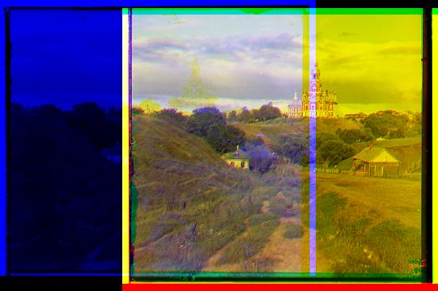
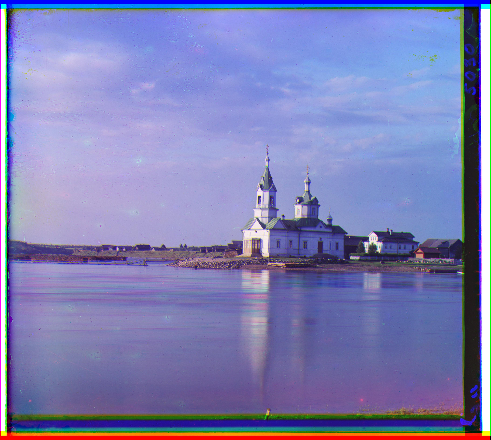
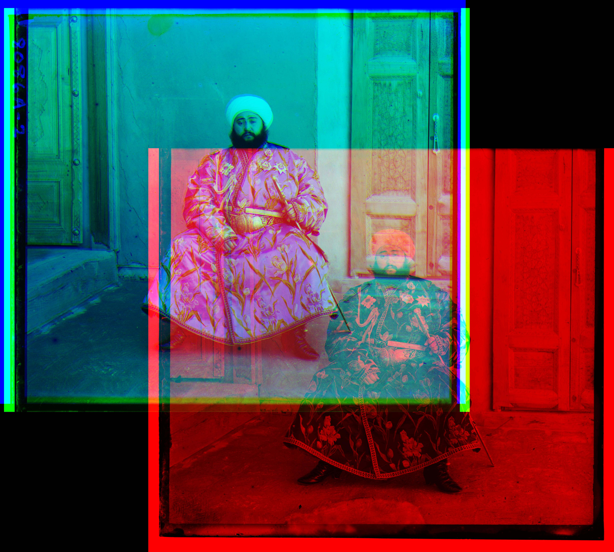
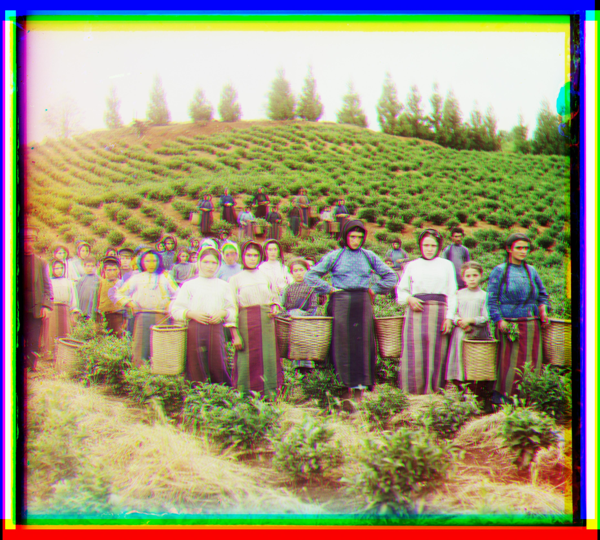
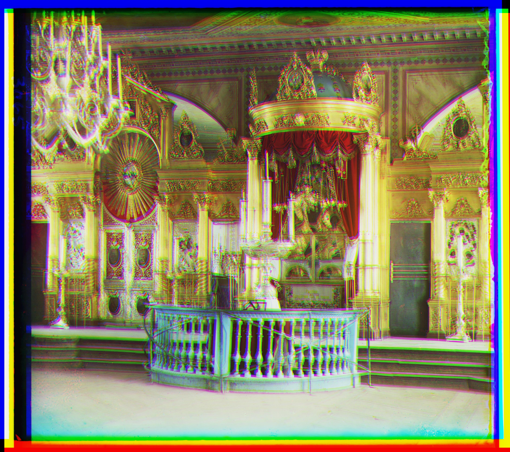
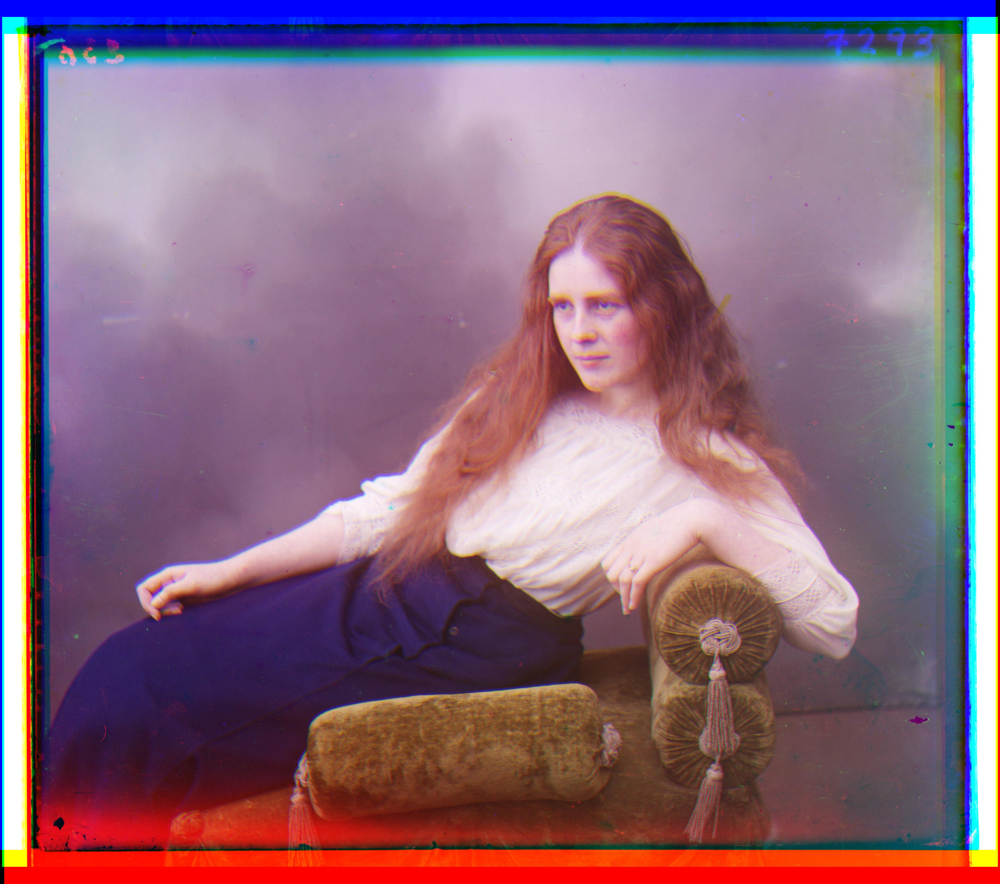
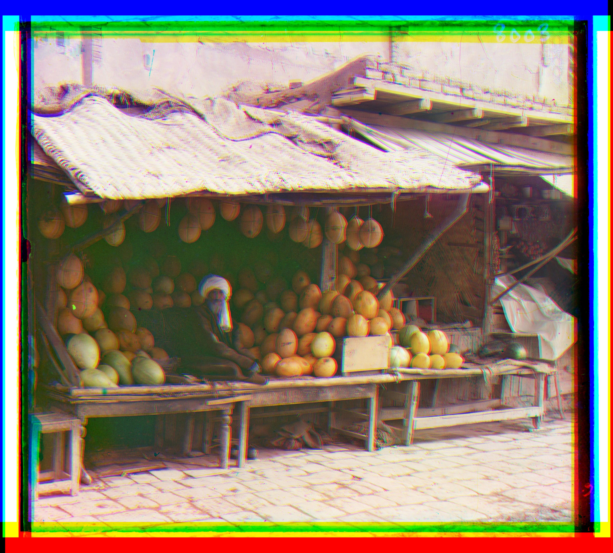
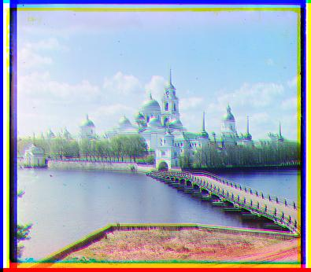
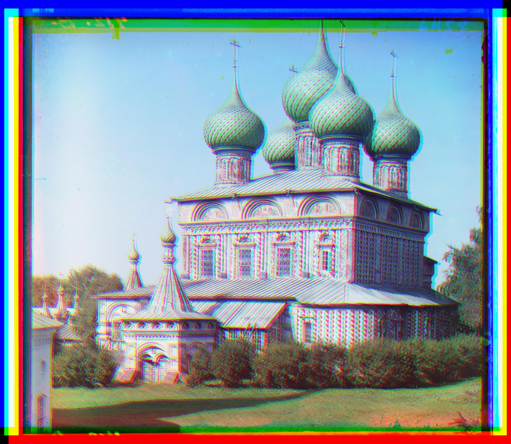
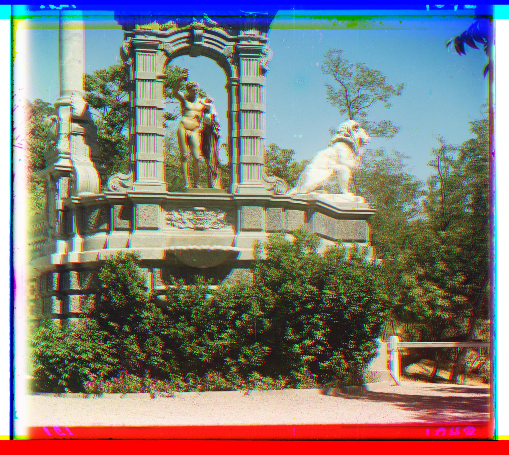
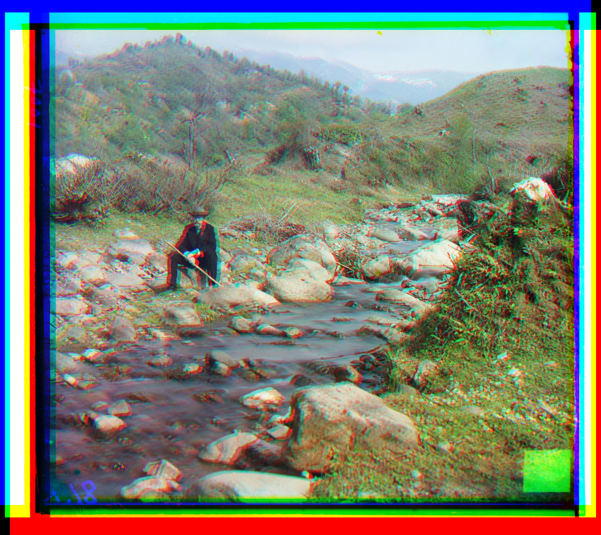
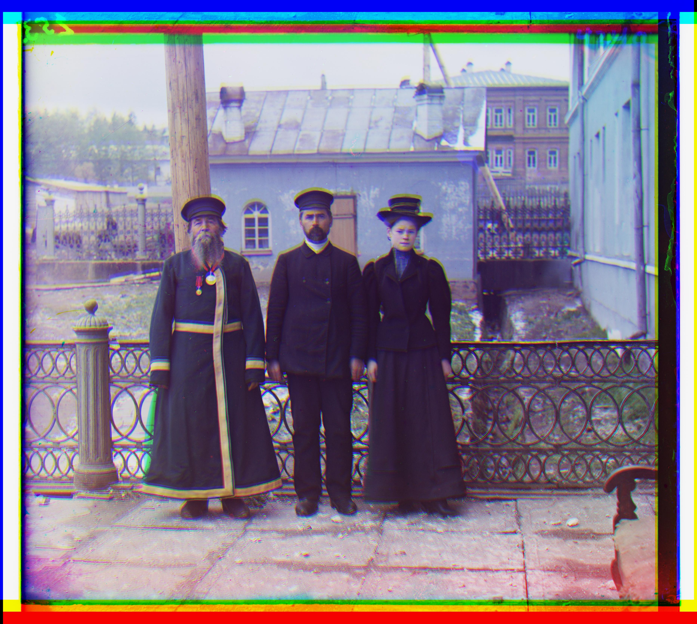
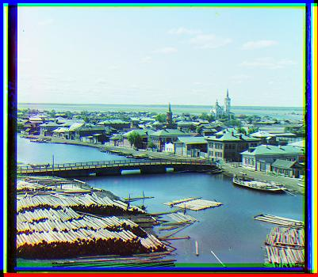
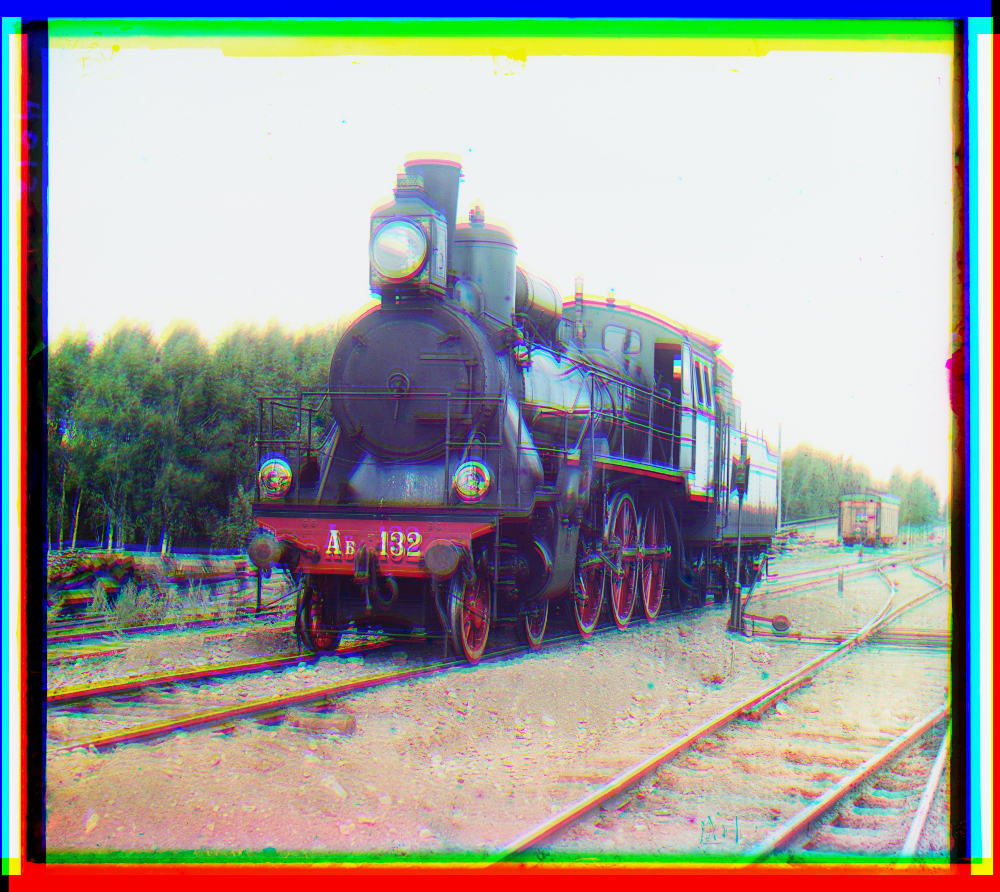